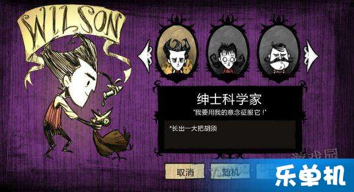
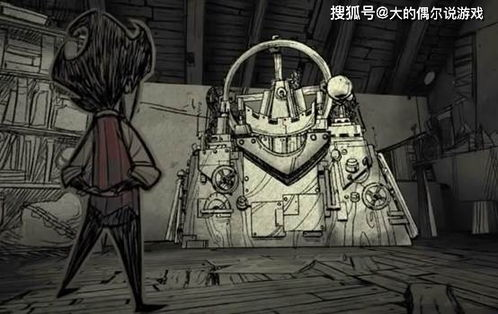
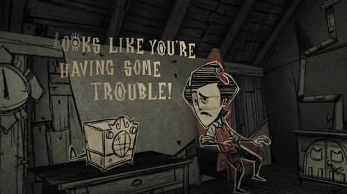
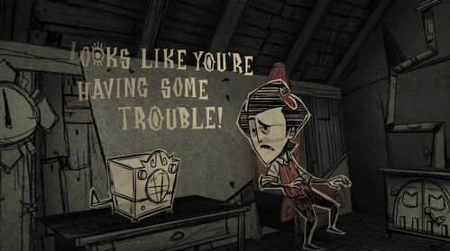
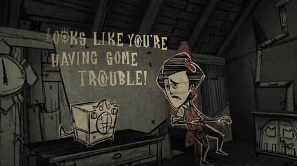

威尔逊图片展示
  

《饥荒威尔逊攻略》
威尔逊是饥荒中较为平衡的角色。
**人物介绍**：
威尔逊是饥荒联机版中的初始角色，也是整个游戏的故事主角。他的特殊能力是会长出胡须，随着时间的推移，胡须会变得越来越长，提供更多的保暖效果。威尔逊的胡须还可以剃掉，用来制作复活肖像或获得理智值。
**生存技巧**：
- **利用胡须保暖**：在冬季来临前，尽量让威尔逊的胡须生长到最长，以提供更好的保暖效果。可以通过剃掉部分胡须来制作复活肖像，以备不时之需。
- **保持理智值**：理智值对于威尔逊的生存至关重要。可以通过避免与怪物战斗、保持良好的饮食和睡眠等方式来维持理智值。
**建家与发展**：
- **选择合适的建家地点**：建家地点应该靠近资源，如食物、木材和矿石等。同时，要考虑到地形和环境的安全性。
总之，威尔逊是一个非常实用的角色，他的技能和特点使他在饥荒联机版中具有很强的生存能力。通过合理利用他的技能和资源，玩家可以在饥荒的世界中生存更长时间。
